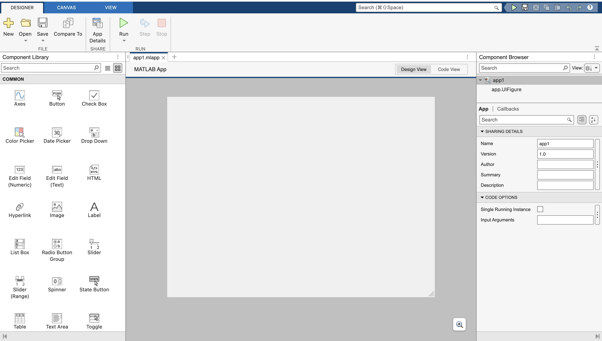
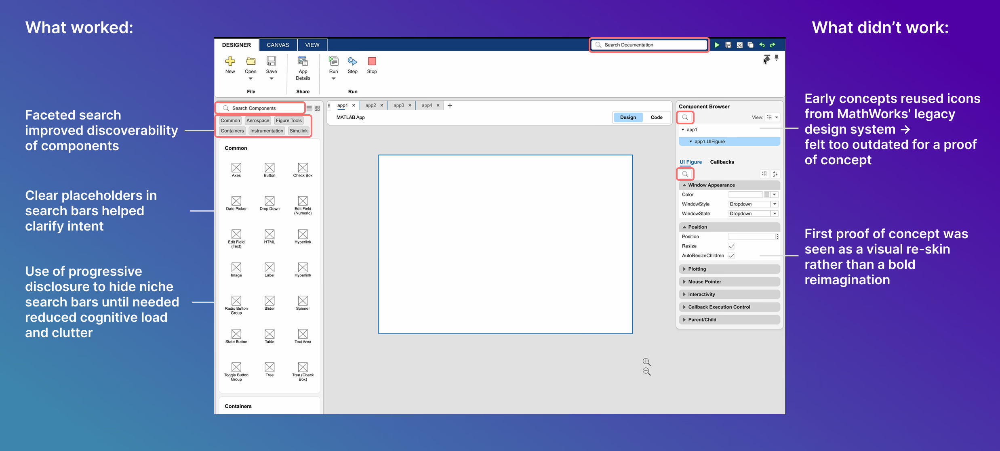

Project Overview
App Designer is a visual development environment (VDE) used in conjunction with MATLAB. It enables users to design interactive applications using drag-and-drop components and integrated code logic — supporting over 3 million users, from researchers and scientists to students.
As the sole UX Design Intern on the App Designer team during my 11-week summer internship, I was tasked with modernizing the tool to make it more intuitive, visually appealing, and competitive with modern prototyping tools like Figma and Adobe XD.

App Designer's existing interface — the starting point for this redesign.
Scope
The prompt to "modernize App Designer" was intentionally broad. Rather than jumping into solutions, I reframed the problem by asking "Why?" and conducted stakeholder interviews to uncover the real drivers behind this initiative — connecting the team's day-to-day pain to MATLAB's five-year product vision.
This early reframing shaped everything that followed: it moved us from a surface-level visual refresh to a purposeful, systems-level redesign.
Users seek a modern, intuitive interface for a better app development experience.
Align with the MathWorks design system, Parula.
Streamline integration between App Designer and MATLAB.
App Designer aims to market itself as a versatile prototyping tool with modern design to match advanced competitors.
How might we modernize App Designer so that it becomes the default prototyping and app-building tool for over 3 million MATLAB users?
Primary Research
Once the 'Why' was established, I led a comprehensive research phase covering multiple methods to build a grounded understanding of users, the competitive landscape, and existing system health.
Constraints
Prioritizing Research Insights
I led a workshop with two UX Researchers to map all research findings onto a Functionality vs. Visual Design impact matrix. This exercise made the prioritization process explicit and defensible — moving us from a long list of possible improvements to a focused set of high-ROI updates.
The matrix helped me identify which problems were blocking core workflows versus which were aesthetic frustrations — and sequence the work accordingly.
Workshop output: prioritization matrix mapping research findings to impact quadrants.
Ideation & Wireframes
The wireframing phase went through significant iteration. Early concepts were quickly pressure-tested in design reviews, leading to meaningful pivots — including a shift to lighter iconography, tighter modular spacing, and ultimately a reimagined layout that treats App Designer as a modern, scalable platform.

Initial design exploration — early layout and structure concepts.
Final Recommendations
Each recommendation was grounded in research, validated through design reviews, and scoped to be feasible within the existing technical architecture.
Collaborated with PM and developers to build a two-layer loading feedback system that dramatically reduces perceived wait time and user anxiety.
Proposed a dual-mode AI assistant to lower the barrier to entry for new users while augmenting power users' workflows.
Added a smooth dark mode toggle based on consistently high user demand surfaced across bug reports and interviews.
Before & After
Side-by-side comparison of the original App Designer interface and the proposed redesign — same core structure, dramatically improved clarity, hierarchy, and visual language.
Testing & Feedback
I participated in 8 rounds of design review sessions with six senior UX designers, iteratively refining my work based on their feedback and keeping designs aligned with team goals and technical feasibility.
"I've noticed how the system consistently provides feedback on my status. This makes the app feel more intuitive, almost as if it's communicating directly with me."
— Senior UX Designer, MathWorks
"The elements appear less cluttered and cleaner. The new UI represents a significant improvement and aligns well with the direction we aim to move in."
— Senior UX Designer, MathWorks
"These improvements will enhance the user experience by maximizing screen real estate, offering more space for interaction and reducing cognitive load."
— Senior UX Designer, MathWorks
Outcome
Reflections